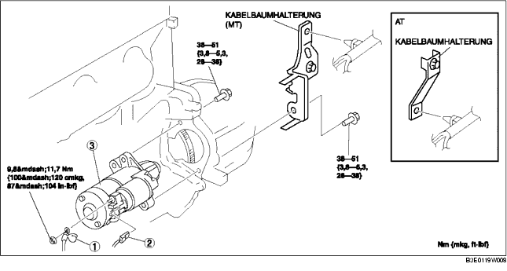

ANLASSER AUSBAUEN/EINBAUEN [ZJ, Z6]
B3E011918400W03
-
Vorsicht
-
• Bei angeschlossenen Batteriekabeln verursacht das Berühren der Karosserie mit der Anlasserklemme B Funkenbildung. Dies kann zu Verletzungen, Feuer und Schäden an elektrischen Bauteilen führen. Vor dem Ausführen der folgenden Arbeitsschritte unbedingt das Massekabel der Batterie abklemmen.
1. Die Batterieabdeckung ausbauen. (Siehe BATTERIE AUSBAUEN/EINBAUEN [ZJ, Z6].)
2. Das Massekabel der Batterie abklemmen.
3. Die untere Abdeckung ausbauen.
4. Gemäß der Reihenfolge in der Tabelle ausbauen.
5. Der Einbau erfolgt in umgekehrter Reihenfolge.

.
|
1
|
Batterie-Anschlusskabel
|
|
2
|
Steckverbinder Klemme S
|
|
3
|
Anlasser
|